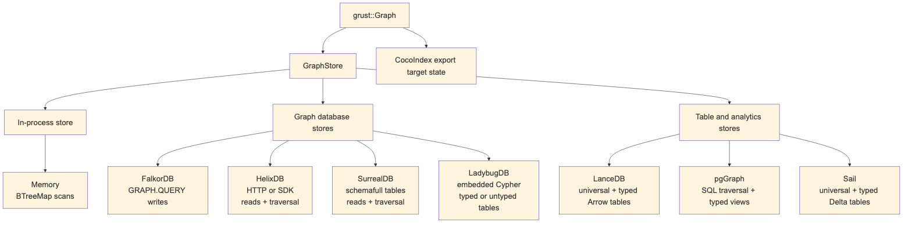

Backends share the same input model but not the same execution model:

Some backends are full read/write/traversal stores today. Others still focus on writes and administrative loading. That is normal for an early multi-backend project, and the trait makes the maturity boundary explicit.
grust-memory is the deterministic local backend. It
stores nodes in a BTreeMap<NodeId, Node> and stores
edges by source, label, destination, and optional explicit edge ID. That
means structural edges still behave deterministically, while id-bearing
parallel edges between the same endpoints can coexist. Reads and
traversals scan those maps. It is the best backend for tests, examples,
and local workflows that need no external service. When a
GraphSchema is applied, the memory backend validates writes
against it, which makes it a useful conformance harness for typed
storage behavior before a database enters the picture.
use grust::prelude::*;
# async fn demo(graph: Graph) -> grust::Result<()> {
let store = MemoryGraphStore::new();
store.put_graph(&graph).await?;
let people = store
.traverse(
Traversal::from_node("talk:rust-graph-api")
.out("PRESENTED_BY")
.to("Person"),
)
.await?;
# Ok(())
# }grust-lancedb treats LanceDB first as a durable
Arrow-native table store. It uses two tables, one for nodes and one for
edges. Nodes are keyed by id. Edges are keyed by an
explicit edge id when present, or by a deterministic
from + label + to key otherwise. That fallback key is
shared with other tabular/export backends through
grust-core::edge_key, so structural edge identity does not
drift across implementations. Writes use LanceDB
merge_insert, and traversal performs hop-by-hop table
queries. When a hop fans out to multiple target nodes, the backend reads
those target nodes with get_nodes instead of issuing one
node query per edge. Property-start traversal filters by label in
LanceDB, then compares decoded Grust properties exactly so nested JSON
or serialized fragments cannot produce false positives.
This backend is a natural home for later vector-search extensions.
The core GraphStore trait should stay graph-focused;
LanceDB-specific nearest-neighbor search can live in an extension trait
without leaking into every backend.
With GraphSchema, LanceDB also creates typed Arrow
tables per node and edge label. The universal grust_nodes
and grust_edges tables remain the portable read/traversal
surface, while schema-labeled rows are mirrored into tables such as
grust_node_person or grust_edge_presents with
typed columns for declared fields. That gives analytical consumers and
future vector extensions a native columnar surface without giving up the
backend-neutral graph model.
grust-ladybug embeds LadybugDB directly through the Rust
lbug crate. It is the durable local graph-database backend:
no Docker service, no HTTP bridge, and no separate daemon. The store
opens either an in-memory Ladybug database or an on-disk Ladybug
directory and creates Grust-managed Ladybug node and relationship tables
from graph labels.
Ladybug can be used for typed or untyped property graphs, and the
Grust backend now exposes that distinction directly. The default
LadybugGraphMode::Untyped accepts ordinary Grust graphs and
creates the needed Ladybug node and relationship tables from graph
labels and endpoint labels on write. That mode matches Grust’s raw
Graph, JSON, YAML, and XML loading path, where labels and
properties are data owned by the application.
LadybugGraphMode::Typed requires
apply_schema or put_typed_graph before writes.
In that mode the backend creates the declared Ladybug tables up front,
does not create undeclared tables during writes, and validates later
writes against the applied GraphSchema. Reads reconstruct
Grust Node and Edge values from the managed
tables, while traversal evaluates the portable Grust traversal IR by
walking Ladybug relationship tables and reading target nodes through the
same GraphStore contract.
The ladybug-arrow facade feature also exposes Ladybug’s
embedded Arrow table path through Arrow IPC streams. A caller can
register IPC node tables, relationship tables, and CSR relationship
tables directly with Ladybug, then query them with Ladybug Cypher and
receive result chunks back as Arrow IPC. The public boundary is IPC
bytes rather than a Rust RecordBatch type, so callers do
not have to match Ladybug’s internal Arrow crate version exactly.
The first implementation stores Grust properties as JSON text for portable round trips. Later schema lowering can add typed Ladybug columns, full-text indexes, vector indexes, and direct graph-RAG extension traits without changing the core graph model.
grust-postgres stores the source of truth in ordinary
PostgreSQL tables:
grust_nodes(id text primary key, label text not null, props jsonb not null)
grust_edges(id text, from_id text not null, to_id text not null,
label text not null, props jsonb not null)The generic backend creates tables and indexes with ordinary
PostgreSQL DDL. It does not require PostgreSQL extensions, so the same
PostgresGraphStore can target local PostgreSQL, Neon, or
another managed PostgreSQL-compatible service. Reads use SQL against the
universal tables. Traversal is lowered to SQL joins over those tables.
Mutation batches are wrapped in PostgreSQL transactions.
Schema application adds typed label views and expression indexes. For
example, a Person node schema with
name: String and age: Int can produce a
grust_node_person view over the universal node table, with
age exposed as a bigint expression. This is a
deliberately incremental typed-storage path: PostgreSQL keeps the
flexible JSONB source of truth while callers that know the schema get
typed SQL surfaces.
grust-pggraph is now the pgGraph extension layer over
that same shared PostgreSQL implementation. It bootstraps the
graph extension, registers the universal tables, and can
optionally build the pgGraph projection for graph-index experiments
without forking the storage and traversal code.
grust-postgres-pgq targets PostgreSQL 19’s native
SQL/PGQ support. It uses the same universal tables as the durable
storage layout, creates a native PROPERTY GRAPH over them,
and executes bounded traversal through GRAPH_TABLE. That
keeps writes, reads, schema views, and mutation batches on the proven
PostgreSQL backend while letting traversal exercise PostgreSQL’s
standard property-graph query engine.
The reusable SQL boundary lives in grust-sql-core. It
owns the parts that are really common across row-store SQL graph
backends: universal table DDL, reads, bounded traversal joins, mutation
framing, schema views, expression indexes, identifier quoting, and
literal escaping. Dialects keep the pieces that affect correctness or
efficiency. PostgreSQL keeps JSONB predicates, ON CONFLICT,
CREATE OR REPLACE VIEW, transaction text, and lateral joins
for undirected steps. Turso keeps JSON text, json_extract,
json_patch, SQLite-compatible views, and a derived-table
undirected join shape. Sail does not use this SQL core because its SQL
path runs through Spark Connect, Arrow IPC staging, and distributed
Spark SQL rather than a direct row-store connection.
grust-turso uses the Turso Rust SDK directly. The
default connection path opens a local in-process Turso database:
# use grust::prelude::*;
# async fn open() -> grust::Result<()> {
let store = TursoGraphStore::connect(TursoConfig {
path: "data/grust.db".to_string(),
table_prefix: "grust".to_string(),
batch_size: 500,
journal_mode: TursoJournalMode::Wal,
})
.await?;
# Ok(())
# }The storage layout mirrors the universal table shape used by the PostgreSQL backend, but uses SQLite-compatible types and JSON text properties:
grust_nodes(id text primary key, label text not null, props text not null)
grust_edges(id text, from_id text not null, to_id text not null,
label text not null, props text not null)Reads and traversal use ordinary SQL over the local Turso connection.
Schema application creates label-specific SQL views and expression
indexes using json_extract. Mutation batches are wrapped in
a Turso transaction.
The journal_mode option selects the concurrency model.
The default Wal is Turso’s single-writer write-ahead log.
Selecting Mvcc enables Turso’s multi-version concurrency
control (PRAGMA journal_mode = mvcc, a database-header mode
applied to a fresh database); data writes then run inside
BEGIN CONCURRENT transactions with bounded conflict retry,
so concurrent writers make progress.
With the turso-sync facade feature, callers can
construct a synced store from a local path, remote URL, and optional
auth token. The GraphStore API continues to operate on the
local SQL connection; callers decide when to call the store’s
push and pull helpers.
querygraph-memory is a concrete application of the Grust
backend contract. It implements TypeSec’s synchronous
MemoryStore interface over a compatible Grust mutation
backend without moving authority or plaintext handling into the storage
layer:
pub struct GraphStoreMemoryStore<G: GraphMutationStore> { /* ... */ }
use querygraph_memory::TursoMemoryStore;
let store = TursoMemoryStore::open("data/querygraph-memory.db")?;GraphStoreMemoryStore<G> is the generic adapter
for an already-initialized GraphMutationStore. The
production-oriented v1 alias, TursoMemoryStore, binds that
adapter to TursoGraphStore.
TursoMemoryStore::open(path) creates missing parent
directories, opens a file-backed local database with the stable
querygraph_memory table prefix, and runs Grust’s bootstrap
before returning. open_with_config is the explicit form for
applications that need another table prefix, batch size, path, or
journal mode. A default TursoConfig still uses
:memory:, so durable callers must supply a file path.
The adapter projects memory into a small property graph:
(:MemoryRecord {record: <opaque JSON>, space: ...})
-[:MENTIONS]->(:MemoryEntity {name, kind})
(:MemoryEntity)-[:RELATES {rel, fact_id}]->(:MemoryEntity)The complete TypeSec StoredRecord is serialized into one
opaque JSON property and round-tripped whole. Grust does not open the
protected content. TypeSec’s MemoryVault remains the only
component that rehydrates it, verifies typed capabilities, applies a
recall clearance ceiling, excludes quarantined records, joins
sensitivity labels during consolidation, and emits audit evidence. That
separation is the security boundary: Grust supplies durable graph
mechanics; TypeSec decides which subject may learn what.
Queries push only memory-space equality into the graph as
Start::NodesByProperty. The other StoreQuery
dimensions—kind, time, label, entities, text, invalidation state, and
ordering—continue through TypeSec’s shared
StoreQuery::matches implementation. This is semantically
complete and conformance-tested, but it is deliberately not advertised
as full GQL pushdown. A neighborhood traversal may discover record
identifiers associated with global entity nodes across several spaces;
the vault rejects every record outside the authorized space before
content can be revealed. Tenant isolation in v1 is therefore
authorization at the vault boundary, not physical graph
partitioning.
Consolidation uses the mutation boundary rather than a special
memory-only transaction API. MemoryStore::apply_batch
converts its puts and invalidations into one GraphMutation
slice and calls apply_mutations once. Turso reports
transactional mutation atomicity, so superseding old records and
inserting the replacement commits as one unit. TypeSec performs the
SecLib label join before that batch reaches storage, which means a
replacement derived from a Sensitive source remains Sensitive after
closing and reopening the database. A generic backend that reports
OrderedNonAtomic remains usable for simpler operations but
cannot promise atomic consolidation.
The adapter also owns the sanctioned bridge between TypeSec’s
synchronous MemoryStore and Grust’s asynchronous
GraphStore. A dedicated current-thread Tokio runtime
carries I/O and time drivers. Calls made outside Tokio drive it
directly; calls made from an existing Tokio runtime execute on a scoped
thread. This keeps an MCP or HTTP service from nesting runtimes or
panicking, and lets the store shut down safely when dropped from
asynchronous application code.
Semantic ranking and cognition preserve the same boundary. The
reference VectorIndex<E: Embedder> is an in-process
cosine index. An Embedder declares whether it is local; a
remote embedder is never handed Sensitive or Secret text, and those
records remain available to ordinary authorized recall without
participating in remote vector ranking. Search returns candidate IDs,
with an optional bounded entity co-mention boost, but the vault still
performs the authorization and label checks. Reference deduplication,
contradiction, and importance analyzers likewise make no writes. They
consume already-recalled views and emit inert
ConsolidationPlan values that must return through the
capability-gated vault.
The durable v1 proof has explicit limits.
MemoryId::next() uses a process-local counter, so a
restarted writer can collide with persisted mem-N
identifiers; a hosted or multi-process system needs collision-resistant
durable IDs and idempotency. VectorIndex is not a
persistent LanceDB ANN implementation, memory predicates beyond space
are not fully pushed into GQL, and the reference analytics are not
distributed Sail cognition. TypeDID request verification is present at
the QueryGraph service boundary, but durable anti-replay state shared
across replicas is post-v1. Grust’s structural edge identity remains
(from, label, to), so changing fact_id cannot
preserve parallel RELATES assertions between the same
endpoints; assertion nodes or a multi-edge identity surface are still
needed for full lineage. Finally, vault-level tenant checks, restart
persistence, and an end-to-end local demonstration do not by themselves
constitute a hosted multi-tenant service with quotas, migrations,
backups, deletion propagation, and service-level objectives.
grust-sail connects to a Sail Spark Connect server over
gRPC. It stores graph data in Spark DataFrames backed by Delta tables.
SQL commands and reads are sent as Spark Connect SQL relation plans, and
read results are decoded from Arrow IPC streams.
Bulk writes stage Arrow IPC batches as Spark Connect
LocalRelation temp views and then merge from those views.
That avoids building one giant SQL literal per row, keeps user values
out of SQL text, and gives long-running requests an operation id with
reattachment enabled. Query filters bind user values through Spark
Connect named arguments. Delete mutations stage their values as Arrow
temp views before running argument-free SQL commands, which avoids
string substitution while matching Sail’s current command-parameter
behavior. Traversal joins use globally unique node ids; source and
destination label columns may be empty for single-edge writes where the
full graph is not in scope.
Sail’s Arrow boundary is now public too. Applications can stage arbitrary Arrow IPC streams as session temp views and query them with Spark SQL, collect Spark SQL results as Arrow IPC chunks, or load Grust-shaped node and edge IPC streams through the normal graph write path. This gives Sail the same data-source role as Ladybug while keeping Sail’s internal Arrow 58 dependency separate from Ladybug’s Arrow 55 dependency.
When a schema is applied, Sail creates typed Delta tables per node
and edge label and mirrors writes into them with
MERGE INTO. The universal Spark tables keep traversal
simple and portable; the typed tables make declared graph labels
available as ordinary Spark columns.
Sail also has reusable graph analytics helpers over the persisted
generic tables. read_graph collects the generic
grust_nodes and grust_edges tables back into a
portable Grust Graph. in_degrees,
out_degrees, degrees, and
degree_pairs run Spark SQL over those same tables and
decode the Arrow results into small Rust row types. These helpers are
deliberately low-level: they expose common graph measurements without
making the backend-neutral GraphStore trait depend on
Spark-specific analytics.
The Sail crate now also publishes its generic table contract.
Constants name grust_nodes, grust_edges, and
the physical node and edge columns, including the persisted generic edge
edge_key and optional explicit edge id.
Projection helpers classify requested graph fields as physical columns
or JSON properties, map edge label to the stored
edge_type, and check when a typed Sail node or edge table
can satisfy a graph query directly. This keeps Sail-native graph
planning and GrustFrames-style distributed lowerings aligned with the
same backend layout that Grust writes.
The same contract layer exposes typed table descriptors derived from
GraphSchema and directional triplet SQL. The triplet
helpers join generic edges back to their source and destination nodes,
and can orient rows as outgoing, incoming, or undirected pairs. That is
the shared primitive needed by distributed triplet filters, motif
expansion, and aggregate-message style passes without making the
backend-neutral store trait depend on those higher level algorithms.
Writable Cypher is not a separate Sail persistence path. The portable
Cypher/GQL layer (see Cypher and GQL) owns parsing, semantics,
planning, and the read engine; for the bounded read subset it lowers the
MATCH/WHERE filter into Spark SQL while the
RETURN projection runs through the shared reference.
SailGraphStore executes resolved
GraphMutationPlans through
CypherMutationExecutor, so Cypher writes use the same
staged-Arrow, MERGE INTO, typed-Delta mirror, and delete
paths as ordinary Grust writes. The plan and report types are
backend-neutral — Memory, Sail, and Turso all execute them — while Sail
adds the SQL read pushdown and typed-table mirrors on top.
The FalkorDB backend writes through Redis GRAPH.QUERY
using Cypher-like MERGE statements. It batches nodes by
label path and edges by relationship type. Schema application creates
label/property indexes for declared node types.
The HelixDB backend has HTTP and SDK stores. Both support batched
writes, node reads, edge reads, and backend-neutral traversal through
Helix dynamic queries. Edge writes store Grust relationship metadata
(relationship, from_id, to_id,
and optional edge_id) so EdgeQuery can
reconstruct Grust edges from Helix relationship rows. Helix writes
preserve supported scalar and array properties instead of silently
dropping non-string values; unsupported JSON object properties return an
explicit error. The current schema hook validates that labels,
relationships, and fields can be safely lowered through the
dynamic-query path; backend-native schema-file generation can build on
that same GraphSchema contract later.
The SurrealDB backend also has HTTP and SDK stores. It can bootstrap,
clear, upsert nodes, relate edges, delete nodes and edges, read nodes
and edges, and execute traversal hop-by-hop through the
GraphStore contract. Applying a schema lowers node and edge
declarations to Surreal DEFINE TABLE and
DEFINE FIELD statements so the backend can run in
schemafull mode where the schema calls for it. Reads use configured
labels and relationships, plus ID-derived table names, to find records
across Surreal’s label-specific tables. Generic edge reads and node
deletes require SurrealConfig.relationships; when that list
is empty, the backend returns a configuration error instead of silently
scanning no relation tables. Explicit edge-label reads and deletes can
still target a known relation table directly. Traversal batches
target-node reads per step through get_nodes, avoiding a
serial node lookup for every edge in a fan-out. Mutation batches are
wrapped in SurrealDB transactions.
grust-cocoindex is intentionally not an ordinary
GraphStore. CocoIndex is an incremental target-state
system, so the Grust integration exports a graph as serializable node
and relationship state:
let export = graph.to_cocoindex_export()?;
let graph = cocoindex_export_to_graph(export)?;The export uses Grust node IDs as target keys, converts properties to JSON, and requires edge endpoints to exist in the graph so relationship source and target labels can be emitted. The import path expects the same key shape, validates relationship endpoints against imported nodes, and preserves explicit relationship keys as Grust edge IDs.
Unit tests stay self-contained, but live backend tests are explicit. They are marked ignored in Cargo so a normal workspace test run does not accidentally depend on local services. When a live test is requested, however, it must reach the backend; it no longer returns early and pretends success when a server is missing.
The repository provides a launcher for those checks:
scripts/integration-test.sh doctor --profile docker --mode docker
scripts/integration-test.sh --profile docker --mode dockerThe Docker profile is the contributor path: it starts the Docker-backed services and runs local LanceDB and CocoIndex checks. The full maintainer profile is still available:
scripts/integration-test.sh --profile allThe launcher reads integration/backends.conf. In
auto mode it prefers already-running services, then
configured local source checkouts such as ~/src/sail,
~/src/SurrealDB, ~/src/FalkorDB, and
~/src/HelixDB, then Docker Compose where a service is
available. The repository-level docs/INTEGRATION.md guide
covers profiles, modes, Docker image pins, source-checkout
configuration, and CI strategy.